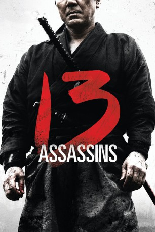

#2272 13 Assassins
 
 IMDB-Wertung: 7.6 / 10
IMDB-Wertung: 7.6 / 10  Metascore: 84
Metascore: 84 
Um die Ehre des Shogun zu retten und das Land vor großem Schaden zu bewahren, gehen 13 mutige Samurai auf eine schier unmögliche Mission. Unter Führung des ehrenwerten Shinzaemon wollen sie Lord Naritsugu, den Halbbruder des Shogun, ermorden, bevor er seinen Platz im Rat einnehmen kann. Denn Naritsugu ist ein kranker Sadist, der aus purem Vergnügen foltert, verstümmelt und tötet und davon träumt, die lange Friedenszeit des japanischen Reiches endlich durch einen amüsanten Krieg zu beenden. Aber der brutale Lord umgibt sich stets mit einer zahlreichen Leibgarde. Shinzaemon arbeitet einen raffinierten Hinterhalt aus, um die Überlegenheit des Gegners zumindest zu reduzieren. Trotzdem wissen die 13 Krieger, dass sie die Mission vielleicht erfüllen, aber kaum überleben werden...
Jahr: 2010
Dauer: 141 Minuten
FSK: 16
Land: Japan Studio: '13 Assassins'Tonspuren:
Untertitel: Deutsch,
Auflösung: 1080p (1920x800) Größe: 5529 MB
Genre: Action, Drama, Abenteuer
Regisseur: Takashi Miike
Drehbuch: Kaneo Ikegami, Shoichirou Ikemiya, Daisuke Tengan
Soundtrack: Kôji Endô
Darsteller:
 Kôji Yakusho als Shinzaemon Shimada
Kôji Yakusho als Shinzaemon Shimada Takayuki Yamada als Shinrokuro Shimada
Takayuki Yamada als Shinrokuro Shimada- Tsuyoshi Ihara als Kujuro Hirayama
 Mitsuki Tanimura als Chise Makino
Mitsuki Tanimura als Chise Makino- Megumi Kagurazaka als Otake
 Yûsuke Iseya als Koyata Kiga
Yûsuke Iseya als Koyata Kiga- Ikki Sawamura als Gunjiro Mitsuhashi
 Arata Furuta als Heizo Sahara
Arata Furuta als Heizo Sahara- Sôsuke Takaoka als Yasokichi Hioki
- Seiji Rokkaku als Mosuke Otake
- Kazuki Namioka als Rihei Ishizuka
- Kôen Kondô als Yahachi Horii
- Yûma Ishigaki als Gannai Higuchi
- Masataka Kubota als Shojiro Ogura
- Hiroki Matsukata als Saheita Kuranaga
- Kazue Fukiishi als Tsuya / Upashi
- Takumi Saitô als Uneme Makino
- Shin'nosuke Abe als Genshiro Deguchi
- Shôzô Uesugi als
- Ayumu Saitô als
- Hajime Inoue als
- Atsushi Haruta als
- Yûya Takagawa als
- Hiroshi Tatsumi als
- Akemi Sakurai als
- Sakurako Moteki als Amputated Woman
- Seiyô Uchino als Zusho Mamiya
- Ken Mitsuishi als Judayu Asakawa
- Ittoku Kishibe als Village Elder
- Mikijirô Hira als Sir Doi
- Kôshirô Matsumoto als Yukie Makino
- Gorô Inagaki als Lord Naritsugu Matsudaira
- Masachika Ichimura als Hanbei Kito
Datei: X:\HD-Eastern-Classic(A-M)\13 Assassins (2010, FSK16, 1920x800).mkv seit 25.10.2015
Festplatte: HD Eastern+Western
 Es gibt insgesamt 63 Filme in der Gruppe 'HD-Eastern-Classic(A-M)'
Es gibt insgesamt 63 Filme in der Gruppe 'HD-Eastern-Classic(A-M)'